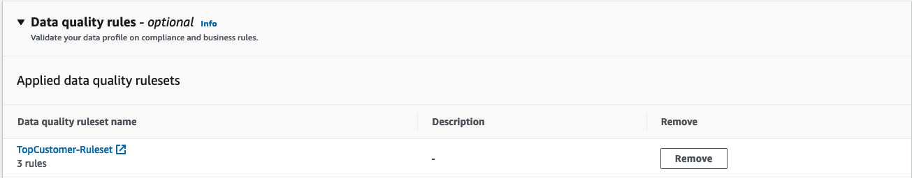

CREATING AND PROFILING THE FIRST DATASET
1. Creating the first Dataset¶
We will first create a DataBrew Dataset based on the table ml_final_top_customers that was crawled previously during the Machine Learning lab and stored in the database glue_ttt_demo_db which is cataloged in the AWS Glue Data Catalog.
In DataBrew, Dataset simply means a set of data—rows or records that are divided into columns or fields. When you create a DataBrew project, you connect to or upload data that you want to transform or prepare. DataBrew can work with data from any source, imported from formatted files, and it connects directly to a growing list of data stores.
In DataBrew, a Dataset is a read-only connection to your data. DataBrew collects a set of descriptive metadata to refer to the data. No actual data can be altered or stored by DataBrew. For simplicity, we use the word dataset to refer to both the actual dataset and the metadata that DataBrew uses.
To start the lab, first go to the AWS Glue DataBrew console. (switch to the right region if needed!)
Follow the steps below to create a new DataBrew dataset
1. Click the DATASETS icon on the left.
2. Click the Connect new dataset button in the middle.
3. Under New dataset details set Dataset name to TopCustomer.
4. Under Connect to new dataset click Data Catalog S3 tables under AWS Glue Data Catalog section.
5. In the AWS Glue databases list, click on glue_ttt_demo_db, then on click the radio button next to table ml_final_top_customers.
6. Click on the Create dataset button.
2. Profiling the first Dataset leveraging Quality Rules.¶
Once the new dataset is created, we will run the profiling job on the new dataset. When you profile your data, DataBrew creates a report called a data profile. This summary tells you about the existing shape of your data, including the context of the content, the structure of the data, and its relationships. You can make a data profile for any dataset by running a data profile job.
1. Click the checkbox next to the TopCustomer dataset.
2. Click ▶ Run data profile on the top. On the pop-up window click Create profile job to open Create job page.
3. Under Job details, set Job name to TopCustomer-profile-job.
4. Under Job run sample select Full dataset.
5. Under Job output settings click on the Browse button to set the S3 location to s3://\$BUCKET_NAME/etl-ttt-demo/output/ (navigate up to the output folder then paste the rest of the path manually: databrew/jobprofiles/).
6. Skip the next Dataset profile configurations - optional and scroll down to Data quality rules. Click on the Apply data quality ruleset button.
7. On the pop-up window, click on the button Create data quality ruleset. (This will take you to a different tab in your browser. Do not close the previous tab!)
8. On this new tab, name the Ruleset as TopCustomer-Ruleset and verify that Associated dataset shows TopCustomer there.
9. Click on the Recommendations(2) tab on the right side of the screen then mark the Select all checkbox. Click Add to ruleset. (Two rules will be automatically added to the Ruleset on the left side of the screen, Rule 1 and Rule 2).
10. Edit Rule 1 as follow:
11. Edit Rule 2 as follow:
12. Click on the Add another rule button at the bottom of the left side to add another custom rule. The Rule 3 will appear:
Note: In Rule 3, under Selected Columns, choose Selected columns and click on the Select columns button, then select Custom columns, type c_email_address in the field and click Add. Then click the oragne Select columns button. See the following picture:

13. Edit Rule 3 as follow:
13. Confirm that all the 3 Rule Summaries (Blue banner) says the following:
- Rule 1: The rule will pass if dataset has duplicate rows count <= 1
- Rule 2: The rule will pass if all columns has missing values == 2%
- Rule 3: The rule will pass if c_email_address has length >= 5 FOR greater than or equal to 100% of rows
14. Click on Create ruleset button at the bottom of the page. You can close this tab now and you should get back to previous one where the Apply data quality rules pop-up window is still open.
15. Still on this pop-up window, click on the refresh button, choose the ruleset TopCustomer-Ruleset you just created and click on Apply selected rulesets.

You should see this now:

16. Scroll to Permission, select AWSGlueDataBrewServiceRole-etl-ttt-demo for Role name. Then, click Create and run job.
The profile job takes about 5 minutes. Let's now create another dataset in the meantime!